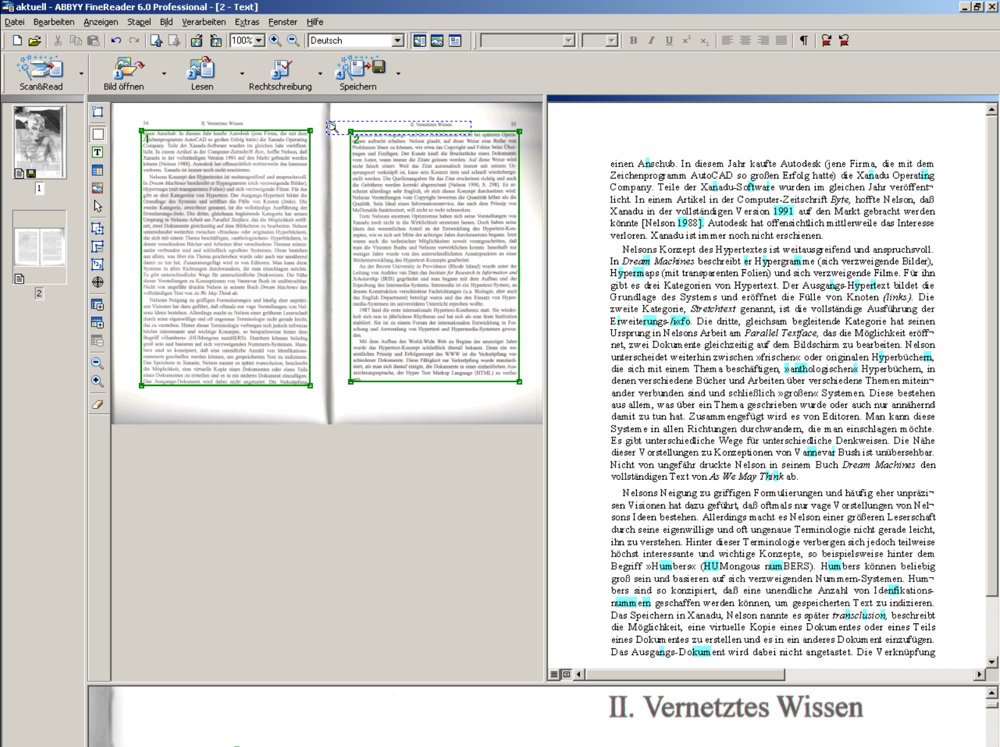
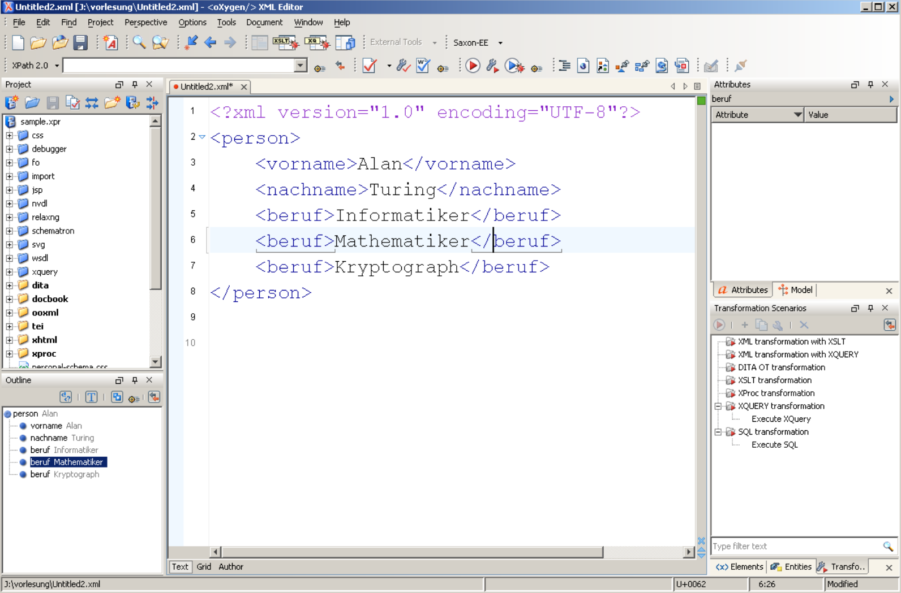
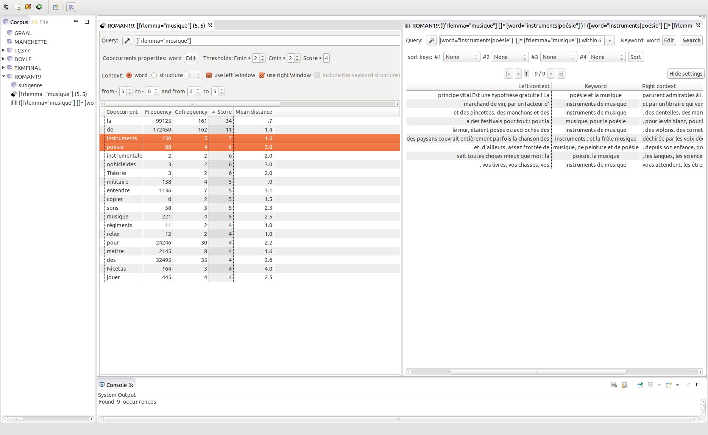

<!doctype html>
<html lang="en">
<head>
<meta charset="utf-8">
<!-- CUSTOMIZE THIS! -->
<title>Computerphilologie</title>
<meta name="author" content="Christof Schöch">
<!-- END -->
<meta name="description" content="Slides">
<meta name="apple-mobile-web-app-capable" content="yes">
<meta name="apple-mobile-web-app-status-bar-style" content="black-translucent">
<meta name="viewport" content="width=device-width, initial-scale=1.0, maximum-scale=1.0, user-scalable=no, minimal-ui">
<link rel="stylesheet" href="css/reveal.css">
<link rel="stylesheet" href="css/theme/simple.css" id="theme">
<!-- Code syntax highlighting -->
<link rel="stylesheet" href="lib/css/zenburn.css">
<!-- Printing and PDF exports -->
<script>
var link = document.createElement( 'link' );
link.rel = 'stylesheet';
link.type = 'text/css';
link.href = window.location.search.match( /print-pdf/gi ) ? 'css/print/pdf.css' : 'css/print/paper.css';
document.getElementsByTagName( 'head' )[0].appendChild( link );
</script>
<!--[if lt IE 9]>
<script src="lib/js/html5shiv.js"></script>
<![endif]-->
</head>

<body>
<div class="reveal">
<!-- THIS IS WHERE THE CONTENT GOES! -->
<!-- Any section element inside of this container is displayed as a slide -->
<div class="slides">

<section data-markdown>
<script type="text/template">
# Computerphilologie: Überblick
<hr/>
<br/>
<p>Workshop Digitale Forschungsmethoden in der Romanistik</p>
<p>Forum Junge Romanistik 2016, Universität Würzburg</p>
<br/>
<hr/>
<p>Christof Schöch<br/>CLiGS - Universität Würzburg</p>
<p></img>&nbsp;&nbsp;&nbsp;&nbsp;&nbsp;&nbsp;</img>&nbsp;&nbsp;&nbsp;&nbsp;&nbsp;&nbsp;</img></p>
</script>
</section>

<section data-markdown>
<script type="text/template">
## Überblick
1. Computerphilologie
2. Texterstellung
3. Textanalyse
4. Weiterführendes
</script>
</section>

<section>
	
<section data-markdown>
<script type="text/template">
# 1. Was ist Computerphilologie?
</script>
</section>

<section data-markdown>
<script type="text/template">
## Verortung der Computerphilologie
<p></img></p>
</script>
</section>

<section data-markdown>
<script type="text/template">
## Computerphilologie
* Literaturwissenschaft: Erfassen, Erzeugen, Anreichern, Analyse, Interpretation, Speicherung und Dissemination von (literarischen) Texten
* Computerphilologie: Literaturwissenschaft auf Grundlage digitaler Textdaten und mit Hilfe algorithmischer Werkzeuge und Methoden.
<br/>
* (Taxonomie: https://github.com/dhtaxonomy/TaDiRAH)
</script>
</section>

<section data-markdown>
<script type="text/template">
## Zwei zentrale Bereiche der Computerphilologie
* Erzeugen/Anreichern: (digitale) Editionen, Archive, Textsammlungen, Korpora
* Analysieren: Stil, Inhalt, Räumlichkeit, Figurennetzwerke, etc.
</script>
</section>

</section>
<section>

<section data-markdown>
<script type="text/template">
# 2. Erzeugen/Anreichern literarischer Texte 
</script>
</section>

<section data-markdown>
<script type="text/template">
# Aspekte des Erzeugens/Anreichern von Text 
* Digitalisierung (Scannen, OCR)
* Digitale Textedition
* Digitale Textsammlungen
* Linguistisch annotierte Korpora
</script>
</section>

<section data-markdown>
<script type="text/template">
## Optical Character Recognition: FineReader
</img>
<p>http://www.abbyy.com/de-de/finereader</p>
</script>
</section>

<section data-markdown>
<script type="text/template">
## XML/TEI-Dateien bearbeiten: oXygen
</img>
<p>https://www.oxygenxml.com</p>
</script>
</section>

<section data-markdown>
<script type="text/template">
## XML/TEI-Dateien bearbeiten: jEdit
</img>
<p>http://www.jedit.org/</p>
</script>
</section>

<section data-markdown>
<script type="text/template">
## Annotation: CATMA</h3>
</img>
<p><a href="http://www.catma.de/">http://www.catma.de/</a></p>
</script>
</section>

<section data-markdown>
<script type="text/template">
## Kollationierung: Juxta
</img>
<p>http://www.juxtasoftware.org</p>
</script>
</section>

</section>
<section>

<section data-markdown>
<script type="text/template">
# 3. Analyse
</script>
</section>

<section data-markdown>
<script type="text/template">
## Perspektiven der digitalen Textanalyse
* Quantitative vs. qualitative Verfahren
* Klassifikation vs. Clustering
</script>
</section>

<section data-markdown>
<script type="text/template">
## Analyse: TXM
</img>
<p>http://textometrie.ens-lyon.fr</p>
</script>
</section>

</section>
<section>

<section data-markdown>
<script type="text/template">
# 4. Weiterführendes
</script>
</section>

<section data-markdown>
<script type="text/template">
## Lektürehinweise (einführend)
* Jannidis, F. (2010). "Methoden der computergestützten Textanalyse". In Nünning, A. and Nünning, V. (eds), _Methoden der literatur- und kulturwissenschaftlichen Textanalyse_. Stuttgart & Weimar: Metzler, pp. 109–32.
* Jannidis, F. (2007). "Computerphilologie". In Anz, T. (ed), _Handbuch Literaturwissenschaft_, vol. 2 (Methoden und Theorien). Stuttgart: Metzler, pp. 27–40.
* Schöch, C. (im Erscheinen). "Ein digitales Textformat für die Literaturwissenschaften. Die Richtlinien der Text Encoding Initiative und ihr Nutzen für Textedition und Textanalyse". _Romanische Studien_.
</script>
</section>

<section data-markdown>
<script type="text/template">
## Lektürehinweise (vertiefend)
* Burnard, L. (2014). _What Is the Text Encoding Initiative?_. Marseille: OpenEdition Press.
* Shillingsburg, P. (2006). _From Gutenberg to Google. Electronic Representations of Literary Texts_. Cambridge: Cambridge Univ. Press.
* Alpaydin, E. (2010). _Introduction to Machine Learning_. 2nd ed. Cambridge, Mass: MIT Press.
* Ramsay, S. (2011). _Reading Machines : Toward an Algorithmic Criticism_. Urbana  Ill.: University of Illinois Press.
</script>
</section>

<section data-markdown>
<script type="text/template">
## Online-Ressourcen
* Textdaten Romanistik Wiki: http://wikis.fu-berlin.de/display/tdr/Textdaten+Romanistik+Home
* Doing Digital Humanities Bibliography: https://www.zotero.org/groups/doing_digital_humanities_-_a_dariah_bibliography
</script>
</section>

</section>


<!-- DON'T TOUCH UNLESS YOU KNOW WHAT YOU'RE DOING :-) -->
</div>
<script src="lib/js/head.min.js"></script>
<script src="js/reveal.js"></script>
<script>
// Full list of configuration options available at:
// https://github.com/hakimel/reveal.js#configuration
Reveal.initialize({
	controls: true,
	progress: true,
	history: true,
	center: true,
	transition: 'slide', // none/fade/slide/convex/concave/zoom
	// Optional reveal.js plugins
	dependencies: [
		{ src: 'lib/js/classList.js', condition: function() { return !document.body.classList; } },
		{ src: 'plugin/markdown/marked.js', condition: function() { return !!document.querySelector( '[data-markdown]' ); } },
		{ src: 'plugin/markdown/markdown.js', condition: function() { return !!document.querySelector( '[data-markdown]' ); } },
		{ src: 'plugin/highlight/highlight.js', async: true, callback: function() { hljs.initHighlightingOnLoad(); } },
		{ src: 'plugin/zoom-js/zoom.js', async: true },
		{ src: 'plugin/notes/notes.js', async: true }
		]
	});
</script>
</body>
</html>
